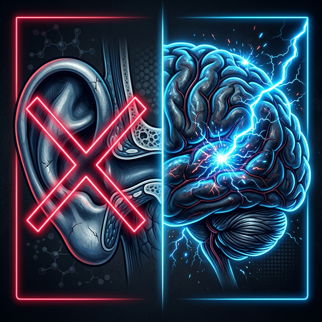

¿Duermes con tu celular cerca de tu cama?
¿Cómo describirías mejor el sonido que escuchas?
La neurociencia acaba de revelar algo inquietante: los celulares y routers WiFi en nuestra casa emiten señales que interfieren con un sistema vital de nuestro cerebro llamado ondas gamma.
Estas ondas son literalmente tu filtro de cancelación de ruido. Cuando el smog electromagnético las debilita, la mente pierde la capacidad de "apagar" ruidos de fondo.
Esto explica por qué tu tinnitus empeora con el tiempo, incluso si tu oído está perfectamente sano.
¿Hace cuánto tiempo convives con este zumbido?
¿Cuáles de estos has probado para combatir tu tinnitus?
(Puedes seleccionar más de uno)
¿En qué momento del día tu zumbido es más intenso?
Por décadas, la medicina intentó tratar tu problema con audífonos y pastillas. Pero la ciencia hoy confirma lo evidente: el zumbido no previene de un oído dañado. Se genera directo en tu cerebro.

De hecho, las pastillas tradicionales JAMÁS van a resolverlo. Tu cerebro está sellado por una "barrera" que bloquea el 99% de cualquier químico artificial.
No se puede arreglar un cortocircuito eléctrico tomando química. Tus últimas respuestas nos dirán exactamente qué protocolo se adapta mejor a tu caso.
Para personalizar tu diagnóstico, ¿eres hombre o mujer?
¿En qué rango de edad te encuentras?
¿De qué manera el tinnitus está afectando tu vida diaria?
(Selecciona todos los que apliquen)
Analizando tus respuestas...
- Verificando función auditiva...
- Evaluando interferencia electromagnética...
- Calculando nivel de bloqueo gamma...
- Generando perfil de tinnitus...
Tu Perfil de Tinnitus
Según tus respuestas, tu zumbido no se está generando en tu oído — presenta un patrón consistente con un bloqueo del sistema de ondas gamma, el mecanismo natural que tu cerebro usa para filtrar y cancelar ruidos internos.
Esto explica por qué los tratamientos convencionales no han funcionado: están atacando el órgano equivocado.
La buena noticia: este tipo de bloqueo cerebral puede reactivarse.
Un equipo de neurocientíficos acaba de revelar un protocolo de sonido de 7 segundos que reactiva el sistema gamma directamente desde la fuente — sin pastillas, sin cirugía, sin audífonos de miles de dólares.
Más de 16,000 personas ya recuperaron el silencio con este método.
Haz clic abajo para ver la presentación completa y descubrir cómo funciona para tu caso específico: